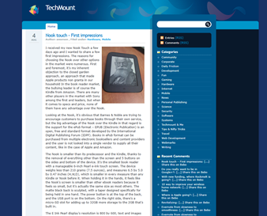

Coming Back Home
There’s something uniquely intimate about writing. It’s beyond a communication medium, it’s a way to brainstorm and canvas ideas. For years, writing has been my preferred way of forming ideas, processing thoughts, and connecting with others. Yet, life has a way of pulling us away from the things that require time and investment. Responsibilities pile up, children, family, work, distractions grow, and slowly, the pages remain blank. That’s what happened when I ran TechMount.
And now, after a long pause, I’m coming back to writing. And it feels like coming back home.

For over 10 years I maintained a blog under the name of TechMount. At some point during 2011 I stopped writing regularly, and in mid 2014 the blog finally went offline. Since then, I wasn’t writing publicly in any regular capacity, some posts on LinkedIn, guest posts published on company blogs or online publications.
The passion for writing never left me. It simmered quietly in the background, even during the hiatus, I found myself jotting down fragments of ideas or scribbling drafts for projects that never started.
Returning to writing is both exhilarating and humbling. The words don’t flow as effortlessly and elegantly as they once did, but writing isn’t about perfection. It’s about presence, it’s about sticking to it, it’s about putting words on “paper”, even when it feels uncomfortable.
“I write only when inspiration strikes. Fortunately it strikes every morning at nine o’clock sharp.”
— W. Somerset Maugham